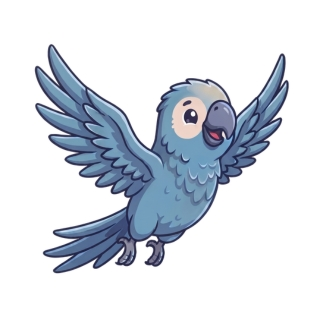

Missões Personalizadas
Analiso seus hábitos de consumo e crio desafios diários sob medida, como reduzir o tempo de banho ou desligar aparelhos em stand-by.


🟢 Assistente IA Ativo
Eu sou o guia oficial da sua jornada sustentável! Fui criado para transformar a preservação do meio ambiente em algo leve, divertido e integrado ao seu dia a dia.
Descubra as ferramentas de inteligência que o Souly traz para a plataforma EcoPulse.
Analiso seus hábitos de consumo e crio desafios diários sob medida, como reduzir o tempo de banho ou desligar aparelhos em stand-by.
Envio insights rápidos e educativos sobre eficiência energética e reciclagem diretamente no seu painel ou por notificações.
Acompanho sua evolução no ranking da comunidade, calculo seus pontos acumulados e aviso o momento exato de resgatar seus prêmios.